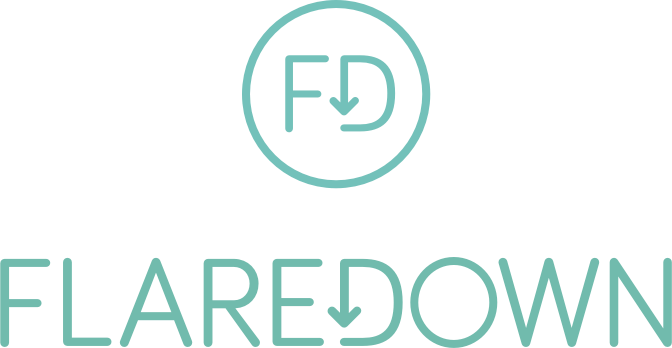
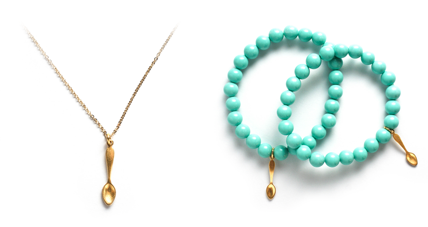
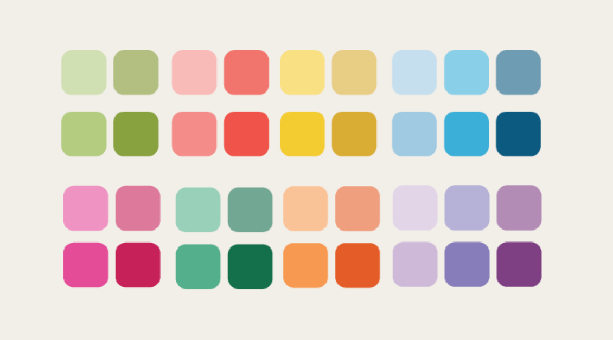

Flaredown is an app that helps people with chronic illness track and analyze their treatments and symptoms. It is intended to improve care of autoimmune and invisible illnesses that are poorly understood and hard to treat. It’s made by patients, for patients, and will be free forever. You can learn more about Flaredown here.
We first contacted Margo to design a custom logotype and icon.
She then continued to help by volunteering her time to make 300 pieces of handmade jewelry that raised over $6,000 for the project…
…and design an incredible palette of colors that hundreds of patients are already using to differentiate between the factors of their illness in visualizations.
We would like to dedicate Flaredown to Margo, who was the model for dealing with a tough situation with style, and who brought so much color to our lives. If you would like to make a donation in her name, you may do so below.
Make a DonationThank you.
- The Flaredown Team
Illustration by Valerie Rustad